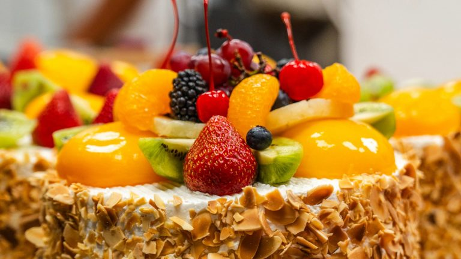
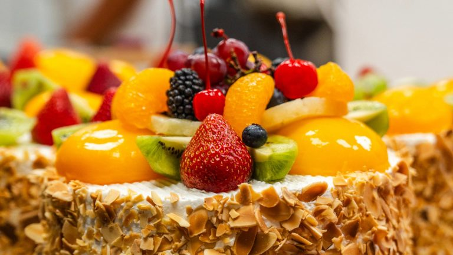

Our Story
Since 1981, La Bonne Bouchée has been a cherished destination in the St. Louis metropolitan area, bringing a slice of Paris to our community. Our journey began with a simple yet profound goal: to offer the finest French-inspired pastries, desserts, and cuisine, crafted with the same authentic recipes and high-quality ingredients that have delighted our patrons for decades.

We take pride in our deep-rooted traditions, maintaining the integrity of our original recipes while infusing a fresh, modern vibe into everything we do. From the warm, inviting atmosphere of our bakery café to the meticulously prepared offerings that grace our menu, we aim to create a memorable experience for our guests.
Over the years, La Bonne Bouchée has evolved, expanding our offerings and updating our space to reflect a blend of classic Parisian elegance and contemporary comfort. Our café now features a variety of specialty beverages, coffees, smoothies, fresh quiches, and a new crepe station, all served in a beautifully updated space complete with chandeliers, hand-painted menu boards, and a quiche case that adds to our Parisian flair.
We're committed to preserving the qualities that have made us a beloved fixture in St. Louis while embracing new ideas to enhance your experience. We're always seeking ways to innovate while staying true to our core values of quality, community, and exceptional service. More exciting things to come!
 

At La Bonne Bouchée, every visit is more than just a meal—it's a celebration of tradition, quality, and the joy of good company. Whether you're here for a quick pastry, a leisurely coffee, or a special celebration, we're honored to be part of your story, and we look forward to welcoming you again and again.
Visit Us
12344 Olive Blvd, Creve Coeur, MO 63141
Restaurant Hours
Sun: 8:00 AM - 2:30 PM
Mon-Sat: 7:30 AM - 2:30 PM
Bakery & Cafe Hours
Sun: 8:00 AM - 4:00 PM
Mon: 7:00 AM - 6:30
PM
Tue-Sat: 7:00 AM - 8:30 PM